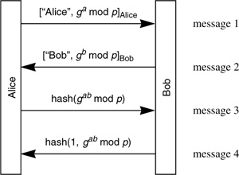

Networking Security Networking Security Networking Security Security Networking Security Networking Security Networking Charlie Kaufman Radia Perlman Mike Speciner Prentice Hall Network Security: Private Communication in a Public World, Second Edition
16.3. Perfect Forward Secrecy
A protocol is said to have perfect forward secrecy (PFS) if it is impossible for an eavesdropper (Sam) to decrypt a conversation between Alice and Bob even if Sam records the entire encrypted session, and then subsequently breaks into both Alice and Bob and steals their long-term secrets. The trick to achieving perfect forward secrecy is to generate a temporary session key, not derivable from information stored at the node after the session concludes, and then forget it after the session concludes. If the session will last for a long time, it is common to generate and forget keys periodically so that even if Sam seizes Alice's and Bob's computers while the conversation is still going on, he will not be able to decrypt messages received before the last key rollover. Protocol 16-2 is an example of a protocol with perfect forward secrecy. It uses Diffie-Hellman to agree on a session key, which achieves perfect forward secrecy assuming both sides generate an unpredictable Diffie-Hellman private number and forget both the private number and the agreed-upon session key after the session ends. Also, each side signs the Diffie-Hellman quantity to foil a man-in-the-middle attack (see §6.4.2 Defenses Against Man-in-the-Middle Attack).

In the first two messages, each side identifies itself, and supplies a Diffie-Hellman value signed by its private key. In the next two messages, each side proves knowledge of the agreed-upon Diffie-Hellman value gab mod p by sending a hash of it, with each side sending a different hash. If each side forgets gab mod p and its private Diffie-Hellman number (a or b) after the session, there is no way for anyone to reconstruct gab mod p from knowledge of both long-term private keys and the entire recorded conversation.
What kind of protocol would not have perfect forward secrecy? Examples include
Alice sends all messages for Bob encrypted with Bob's public key, and Bob sends all messages for Alice encrypted with Alice's public key. Kerberos (since the session key is inside the ticket to Bob, and is encrypted with Bob's long-term secret). Alice chooses the session key, and sends it to Bob, encrypted with Bob's public key.
Perfect forward secrecy might seem like it only protects against a fairly obscure threat. However, protocols designed with perfect forward secrecy usually have another property, which is particularly popular with the IETF crowd, which we'll call escrow-foilage. This means that even if the forces of darkness (and we make no value judgments here), have required Alice and Bob to give their long-term private keys to some benign, completely trustworthy organization, the conversation between Alice and Bob will still be secret between only Alice and Bob. In other words, even with prior knowledge of Alice and Bob's long-term keys, a passive eavesdropper cannot decrypt the conversation.
Of course if Sam has prior knowledge of all of Alice's and Bob's secrets, then he can impersonate Alice or Bob, and perhaps trick them into divulging what they would have divulged in the conversation. Maybe you'd think Alice and Bob could start off the conversation by asking each other a few personal questions like, "What café did we meet at in Paris?" but Sam could be acting as an active man-in-the-middle, decrypting and reencrypting the traffic, relaying the personal questions and answers, and this would be very difficult to detect.
Anything with perfect forward secrecy will also have escrow-foilage against a passive attack, since anything you can do by having recorded the conversation and learned the secret later you can also do knowing the secrets in advance and eavesdropping in real-time. But often with escrowed systems a user has two public key pairs, one for encryption and one for signatures. And in those cases, only the encryption key is escrowed, since law enforcement would like to decrypt data, but does not need the ability to forge signatures. It would be counterproductive for them to have a user's private signature key, because then the user can repudiate his signature since anyone else with access to the key might have signed the message. So assuming the signature keys are not escrowed, then Protocol 16-2 will have escrow-foilage even against active attacks.
|